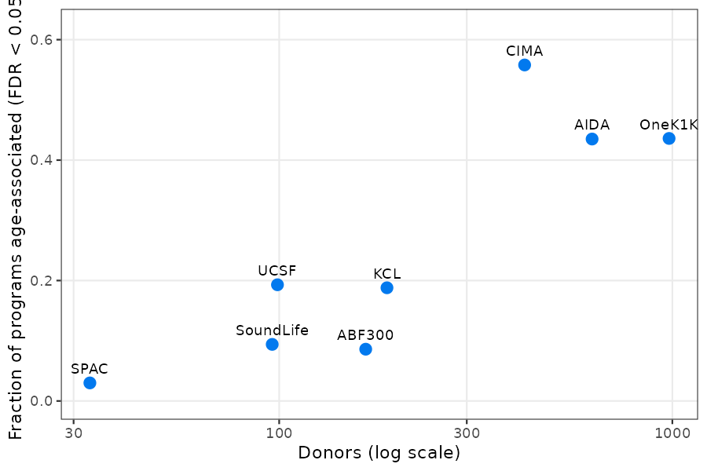
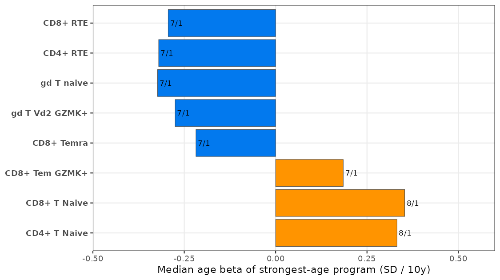
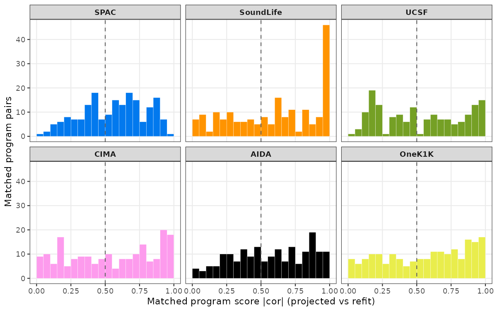
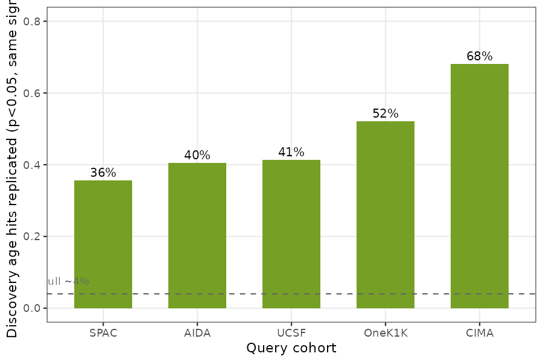
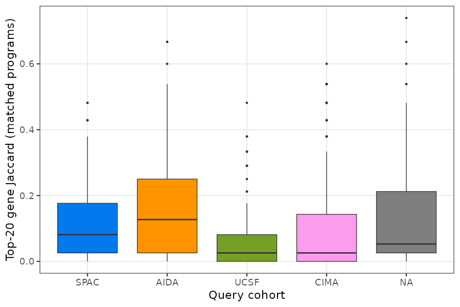
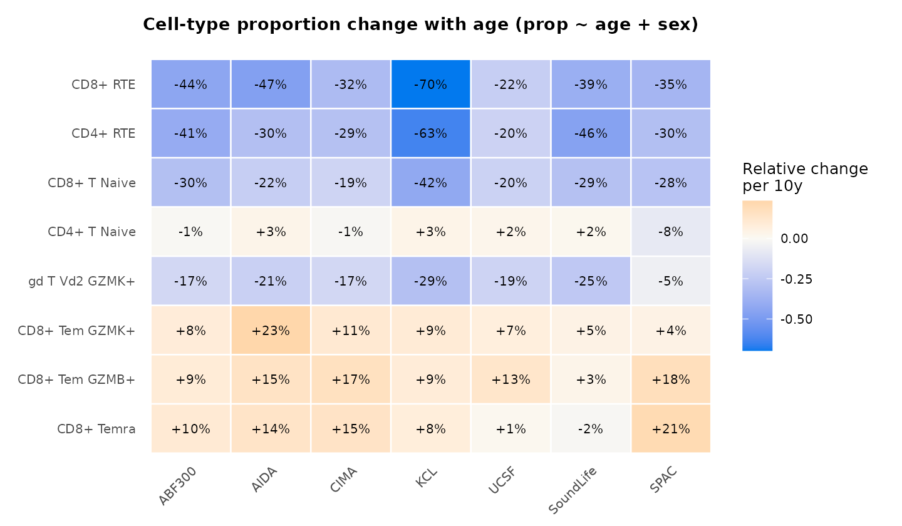
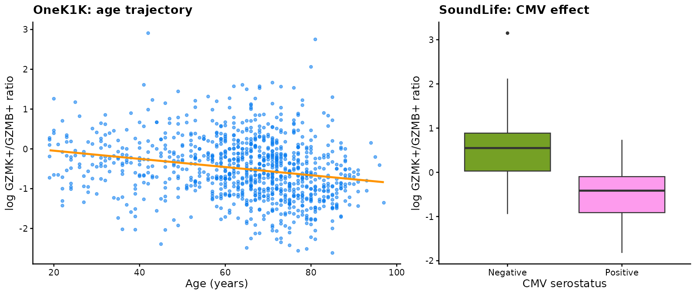

Case study: immune-aging programs across 8 global PBMC cohorts
immune_aging_cross_cohort.RmdThis article applies the full cellprograms workflow —
donor-level EBMF programs per cell type, covariate association, and
cross-cohort MR-0 freeze / MR-1 projection — to the 8-cohort PBMC
immune-aging resource of Terekhova et al. (Immunity 2026): 2,609
healthy donors across ABF300 (166), OneK1K (981), AIDA (625),
CIMA (421), KCL (188), UCSF (99), SoundLife (96), and SPAC (33), with 59
harmonized cell types. All numbers and figures are precomputed; code
chunks show exactly how each was produced and can be re-run against the
open portal data (see Reproducing).
The analysis answers three questions:
- Do EBMF programs discovered in one cohort transfer to another (score concordance of projected vs refit programs)?
- Which programs carry age structure, and does that structure replicate across cohorts?
- At what level is conservation observable — scores, association profiles, or gene lists?
Data and pseudobulking
Each cohort is downloaded from the authors’ open portal and pseudobulked per donor × cell type by summing raw counts over all cells (minimum 10 cells per donor-cell type; the “Bad quality” annotation group is dropped):
# per cohort, e.g. OneK1K (see analyses/immune_aging/README.md for access)
python scripts/pseudobulk_h5ad.py OneK1K_reannotated.h5ad pseudobulk/onek1k OneK1K --min-cells 10The result is a donors × genes count matrix per cell type plus harmonized metadata (donor_id, age, sex, ethnicity, CMV, BMI). CMV is informative only in KCL and SoundLife; all cohorts carry broad age ranges (19–97 in OneK1K).
Fitting programs (MR-0 discovery freeze)
Programs are fit per cell type with the default EBMF machinery (point-Laplace loading prior), top-2000 variable genes, log1p-CP10K scale, K up to 10, without covariate residualization — an amendment adopted after a pilot showed that residualizing age inside the fit makes program scores orthogonal to age by construction, rendering the association test vacuous. Associations are tested post hoc instead.
# scripts/fit_pilot.R wraps this per cell type with tryCatch isolation
x <- as_cell_program_data(pseudobulk, sample_metadata = meta)
fit <- fit_celltype_programs(
x, loading_prior = "point_laplace", max_factors = 10,
features = "variable", n_variable_genes = 2000,
feature_scale = "logcounts", var_type = 1, seed = 20261016
)
fit <- canonicalize_programs(fit)This yields 430–573 programs per cohort (after degenerate-factor
handling; e.g. KCL’s Myeloid cDCs retains no programs). Age, sex, and
CMV associations are then tested per program with ordinary linear models
on the program scores (scripts/assoc_programs.R; BH-FDR
within cell type; CMV dropped where constant):
# per cell type and program, on the canonicalized scores:
fit_lm <- lm(score ~ age + sex + CMV, dd) # dd: donors x (score, age, sex, CMV)
age_beta_per_10y <- coef(summary(fit_lm))["age", 1] / sd(dd$score) * 10Age structure is widespread and scales with power: 44–56% of programs are age-associated (FDR < 0.05) in the 400–1000 donor cohorts (CIMA 55.8%, OneK1K 43.6%, AIDA 43.5%) versus 3–19% in cohorts under 200 donors.
# figures/fig_aging_age_prevalence.png
The thymic-involution axis replicates across cohorts
Taking each cell type’s strongest-age program and asking whether it replicates in direction across the cohorts where it is significant: the recent-thymic-emigrant programs decline essentially everywhere.
# scripts/age_summary.R; per-cell-type table of strongest-age programs| Cell type | Cohorts significant | Sign (neg/pos) | Median beta (SD/10y) |
|---|---|---|---|
| CD8+ RTE | 7 | 7 / 0 | −0.29 |
| CD4+ RTE | 7 | 6 / 1 | −0.32 |
| gd T naive | 7 | 6 / 1 | −0.32 |
| gd T Vd2 GZMK+ | 7 | 7 / 0 | −0.28 |
| CD8+ Temra | 7 | 5 / 2 | −0.22 |
| CD8+ Tem GZMK+ | 7 | 3 / 4 | +0.19 |
The CD8+ RTE program’s loadings are canonical recent-emigrant biology (SELL, CD8B, TRBC2, CD8A, CD7); the CD4+ RTE program adds SOX4 and LEF1. This is the paper’s central mechanism — thymic involution as the driver of immune aging — recovered de novo by the EBMF pipeline.
# figures/fig_aging_rte_consistency.png
Two interpretation notes. First, naive-compartment programs increase with age (+0.32 SD/10y) — but their loadings are naive-vs-cytotoxic contrasts (SELL/CCR7/LEF1 vs S100A4/NKG7/JUN), i.e. a shift in the naive pool’s internal makeup, complementary to the proportion-level naive decline the paper reports. Second, the GZMK/GZMB health axis is a cell-type proportion; at program level the Tem GZMK+ age signal marks its less-differentiated, CD27+/LTB+ pole.
Cross-cohort transfer: projection vs refit matching
The discovery fit (ABF300) is frozen (MR-0) and projected into each query cohort (MR-1): each discovery program’s score in the query is a fixed linear combination of the query’s pseudobulk profiles, with the discovery preprocessing replayed. Matching projected programs to the query’s own refit programs by optimal assignment on |cor| gives the score-level transfer rate:
proj <- project_programs_to_cells(disc_fit, expr, cell_types,
donors = donors, sample_metadata = meta,
min_coverage = 0.9)
# figures/fig_aging_concordance.png
Median matched |cor| is 0.49–0.63 across all six pairs — moderate transfer, with 30–39% sign flips (program orientation is arbitrary across fits).
Why matched association profiles do not replicate — and what does
A natural test — correlate age betas across matched program pairs — fails in every cohort (Spearman −0.07 to 0.17), including at 981 donors where beta noise is negligible. The cause is structural, not statistical: unsupervised EBMF decompositions distribute age-associated variance across their K programs differently in each cohort (rotational freedom, adaptive shrinkage, greedy factor addition). Program identity is cohort-specific even when program content is conserved.
The projection sidesteps this: the discovery program’s identity is
pinned by the frozen loadings, so testing
projected_score ~ age in each query asks a well-posed
question — does this fixed gene program vary with age in the
query? Replication of discovery age hits (FDR < 0.05 in ABF300) on
projected scores:
# scripts/projected_age_replication.R| Query cohort | Discovery hits replicated (p<0.05, same sign) |
|---|---|
| CIMA (421) | 68% |
| OneK1K (981) | 52% |
| UCSF (99) | 41% |
| AIDA (625) | 40% |
| SPAC (33) | 36% |
Null expectation is ~4%. Replication is real but partial — a core of biologically coherent programs (RTE, gd T naive, gd T Vd2 GZMK+) replicates near-universally, while the bulk regresses toward the null under winner’s-curse shrinkage and projection noise.
# figures/fig_aging_replication.png
Gene lists are the wrong conservation unit
Finally, top-20 gene Jaccard for matched program pairs is low (median 0.03–0.13; ≥ 0.2 in only 8–36% of pairs): EBMF’s dense, shrunk loadings make top-N gene identity unstable even when the score subspace is conserved. Conservation should be assessed at the score/subspace level, not by gene-set overlap.
# figures/fig_aging_jaccard.png
The composition-level aging axis
Program scores capture within-compartment transcriptional shifts;
cell proportions capture a second, independent aging
axis. Re-running the per-donor models at the composition level
(prop ~ age + sex, per cell type; scripts in
analyses/immune_aging/scripts/) shows the thymic-involution
signature even more universally than the program level: CD8+ RTE
proportions decline with age in 8/8 cohorts (relative
change −22% to −70% per decade), CD4+ RTE in 8/8, CD8+ T naive in 8/8,
and γδ T Vd2 GZMK+ in 7/8 — mirroring the projected RTE program declines
above.
# figures/fig_aging_composition.png
The paper’s GZMK+/GZMB+ Tem ratio behaves differently: its age trajectory is cohort-inconsistent (log-ratio slope per decade −0.101 in OneK1K, −0.078 in CIMA, −0.161 in SPAC, but +0.157 in AIDA — opposite sign — and null in ABF300, KCL, UCSF, SoundLife). This is consistent with the ratio acting as a health-trajectory stratifier rather than a monotonic age effect. The CMV effect on the ratio, by contrast, replicates cleanly where CMV status is recorded: in SoundLife, CMV+ serostatus shifts the log ratio by −1.07 (p = 2.5e-11) — CMV+ donors carry a ~66% lower GZMK+/GZMB+ ratio — exactly the paper’s claim. (KCL’s smaller, null estimate is diluted by its No_info stratum, kept as its own level.)
# figures/fig_aging_tem_ratio.png
Practical guidance
- Freeze-then-project (MR-0/MR-1) is the right design for cross-cohort program claims: it fixes program identity and makes replication tests well-posed.
- Matched-refit association profiles are not a valid conservation metric for unsupervised decompositions; use projected scores instead.
- Report program-level and composition-level age structure separately — they capture different biology (within-compartment shifts vs proportions).
- Small cohorts (n < 100) attenuate association replication severely; the per-cohort power table above is the honest caveat to carry.
Reproducing
All scripts, committed result tables, and the exact commands
(including the portal data-access recipe and the registered operating
point) live in analyses/immune_aging/.
The batch benchmark motivating the no-residualization design is in
benchmarks/batch_adjustment/ (both the main and small-batch
amendments preregistered; neither rule fired; OLS default retained).